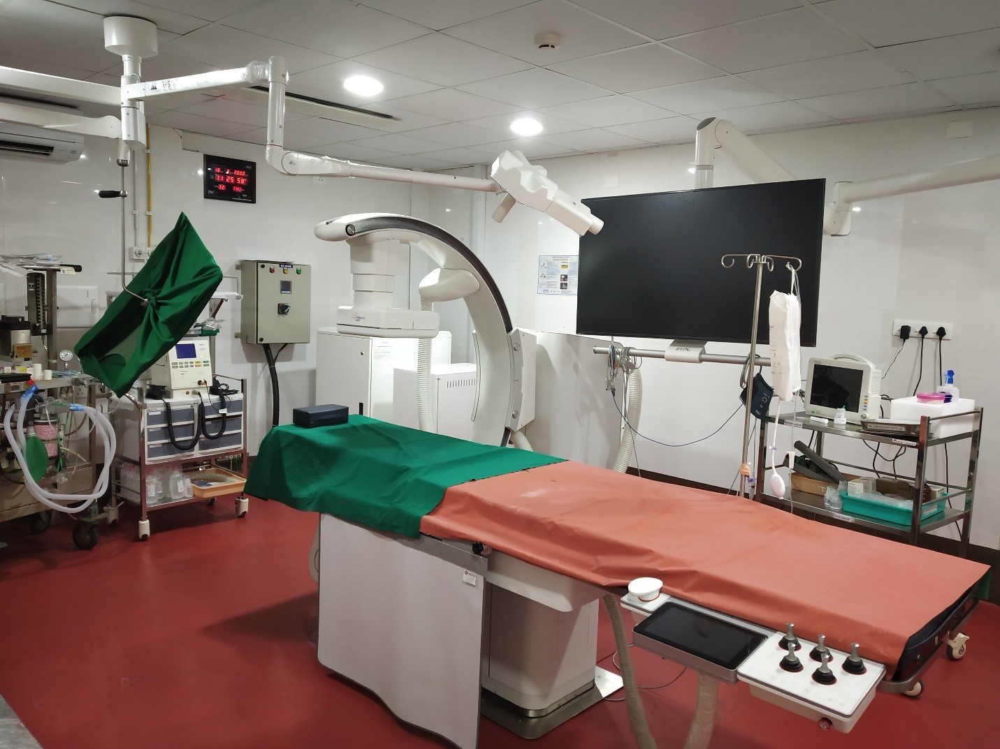

SB CARDIO VASCULAR CENTRE
Cardiology & Cardiothoracic surgery was started in the year 2020
Persistent demand from the patients coming for treatment of urological and nephrological patients and their relations that they would prefer to have treatment at SB Hospital for other illnesses also if and when required. Most of them resent being referred to some other hospital for consultations and treatment of other illnesses. As SB Hospital already has other infrastructure facilities with well-structured ICU facilities, it was decided to start Cardio thoracic department. Particularly in view of the ever-increasing incidence of heart ailments it was decided to start facilities for rendering similar service to patients with cardiac and other ailments. Therefore, the services of a good team with cardiac technician and other staff was enlisted. Advanced technically safe and efficient equipment were acquired. Under the able guidance of cardiac Physician, DR.R. VIJAI ANANTH, within a short time of three months, a number of coronary angiograms and angioplasties were performed. Certain patients will be benefitted much more by surgical correction rather than coronary angioplasties. SB Hospital already provided with modern operation theatres well equipped with facilities for major surgical procedures including Renal Transplantation, a decision was taken to start cardio thoracic surgery. Well experienced and smart team of cardiothoracic surgical team was soon involved in starting the cardio thoracic surgical department.

PACEMAKER
Medical treatment with various drugs under the direct supervision of the cardiologist are first given as an emergency measure to correct any rhythm (heart rate) abnormalities of the heart. Certain patients may require a temporary pace maker to set right the rate and rhythm. If warranted facilities are available to implant a permanent pace maker.